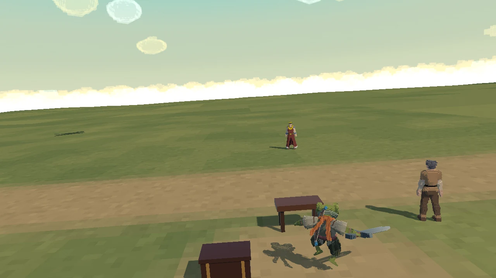
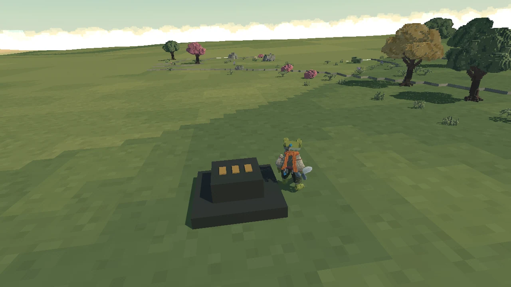

Mismo · Arco del tutorial
La llamada de Soul Eater
El dragón sobrevuela el pueblo después de la introducción. Un vigía explica la amenaza y el rey encarga reactivar tres faros, en cualquier orden, para comenzar el ritual.
Sobrevuelo del pueblo

Captura de la escena real. Vuelo existente, seguimiento de cámara y devolución del control. Se puede omitir con Esc.
Invocación desde el altar

Aproximación → aterrizaje → rugido → combate. Entrar en el claro no invoca al jefe: hay que activar los tres puntos y confirmar el ritual.
Pendiente de arte: el concept y el modelo 3D del faro con llama arriba se dejan para el final. Ya están los tres puntos de activación y su progreso. Sin guardianes.
Combate: Soul Eater tendrá dos fases. El ritual conecta la primera fase existente; la segunda sigue pendiente.
Las animaciones de esta página son capturas del juego. Pruebas del recorrido · Órdenes y persistencia · Compilación